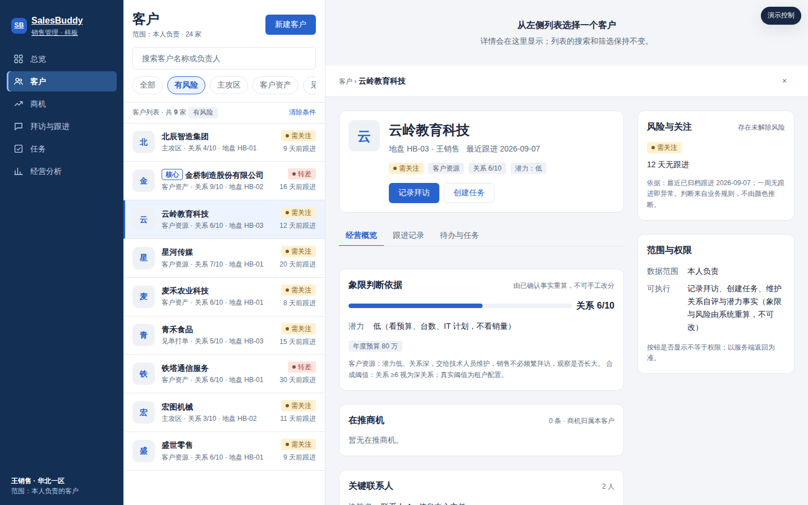
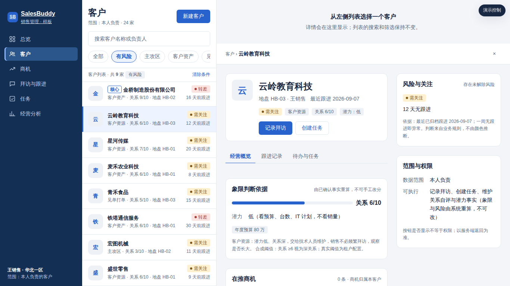
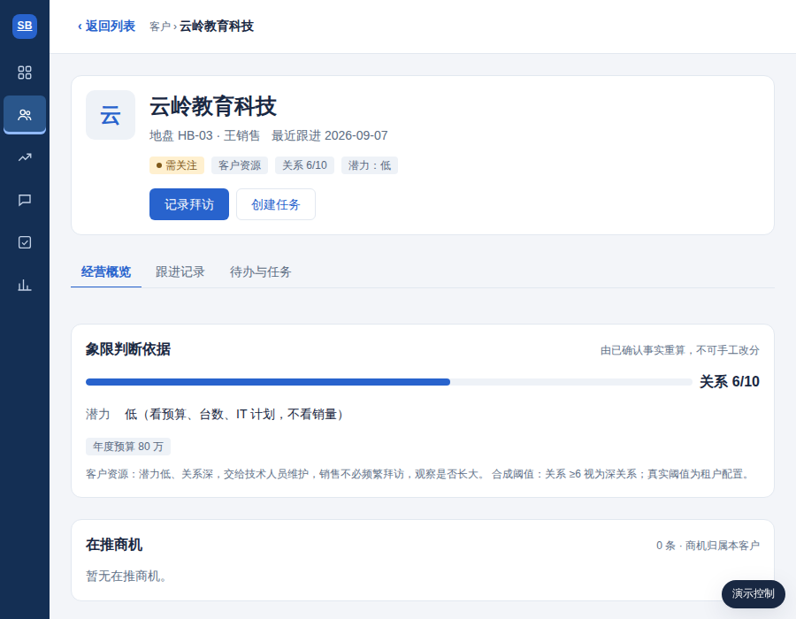
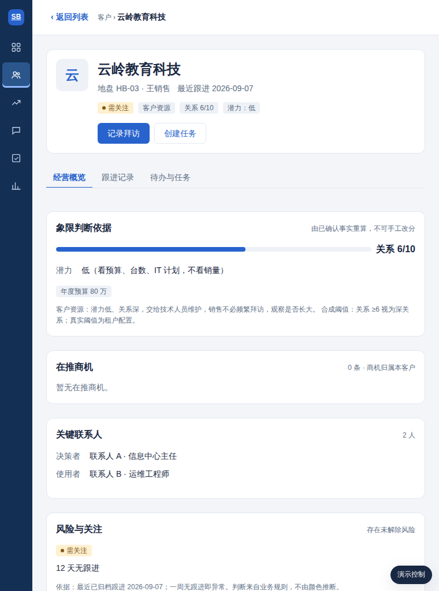
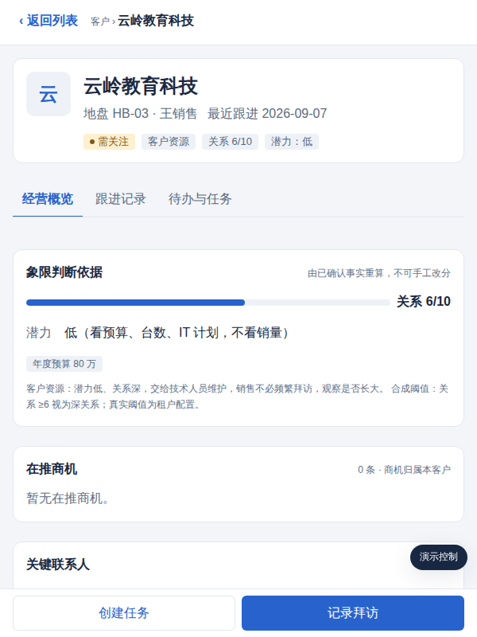
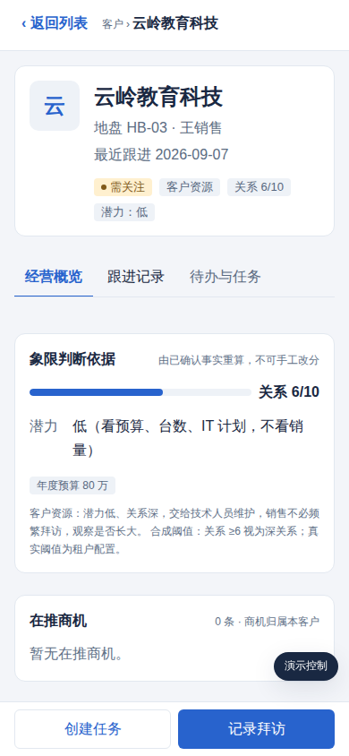

让用户看清信息、完成操作；让产品、设计、开发、测试和 AI 用同一套规则
三端现在各画各的。小程序原生颜色 5/5 项与规范不一致，变量 0 处接入，颜色和字号靠截图口口相传，改一处要改三处。这个站把规则、颜色、样板放在一处，都由规范源文件生成。改源文件、跑一条命令，站点跟着更新。覆盖 SalesBuddy 销售管理的电脑网页、手机网页和微信小程序「销售智助」。
汇报用这一页
- 问题 小程序原生颜色 5/5 项与规范不一致，变量 0 处接入。哪些必须一样、哪些允许不一样，以前没人拍板。
- 做了什么 26 条 Web 规则 已确认，12 条跨端规则 建议，22 条候选原则 建议，53 个设计变量，一页「客户列表到详情再返回」的样板 252/252 项 已验证（本地）。
- 证据到什么程度 看每张卡片右上角的状态词。真机和真实工程接入都还没做。
- 今天要决定的事
- 一级导航命名是否三端一致：叫「客户」还是「作战地图」，手机底部 4 项加更多怎么分配 谁决定：产品 · 待决定，不阻塞
- 客户详情是否只保留一种呈现，小程序现有三种 谁决定：产品 · 待决定，不阻塞
- 9 个建议变量与两条端侧覆盖是否登记采用，覆盖指手机正文 16px、留白 16px 谁决定：规范维护人 · 待登记
- 手机说明文字 13px 是否新增
--ui-text-small端侧覆盖 谁决定：设计负责人 · 待决定 - 业务口径拍板项：客户等级、关系量纲、地图轴向、地盘落库、风险等级、董事长视图、待办与任务、有风险与需关注 谁决定：产研 · 见
03-跨端样板-客户列表到详情/业务约束清单.md末节
- 要认领的角色 产品／业务负责人、设计负责人、开发负责人、测试／验收负责人、规范维护人。目前都还没填人，见「团队怎么用」。
- 下一步
- 小程序客户页最小接入，会改真实业务工程。
- 真机验收并填页面验收单。
- 指定五个角色的实际负责人，填入这张表与
04-团队协作与版本流程.md第 7 节。 - 等 Web 工程可见时，按样板改造真实客户列表与详情。
15 分钟汇报可以这样走：这一页 3 分钟，视觉基础改一个颜色 3 分钟，布局拖宽 2 分钟，交互状态点节点 2 分钟，跨端对照点「适配」2 分钟，回到这一页要决策 3 分钟。
几个词
| 词 | 意思 |
|---|---|
| 设计变量 | 颜色、字号、间距的统一名字（如 --ui-primary）；改名字对应的值，各端一起变 |
| 样板 | 03 章那页可点的「客户列表→详情→返回」演示页，用来验证规则，不是真实产品 |
| 变更单 | 改规则前填的一页表：当前规则、实际问题、候选改法、受影响页面、怎么验证 |
| 登记采用 | 某产品的某个端在采用登记表写下「已采用」；收到 ≠ 采用 ≠ 已验证 |
| 视口 | 浏览器窗口的宽度；本规范按 >900、601～900、≤600 三档 |
| PR | 在 Git 上提交一次修改申请，评审通过后合并 |
状态词
| 词 | 含义 |
|---|---|
| 已确认 | Web 1.0 的 26 条正式规则，和 1.0.0 已定值的 36 个变量。改它要走变更单 |
| 建议 | 跨端 X 规则、候选原则 D 与 A、新增变量、端侧覆盖值、流程。还没登记采用 |
| 业务事实 | 产品原则和业务口径，不是设计规则 |
| 已验证（本地） | 样板自动验收通过。合成数据，模拟视口，没上真机 |
| 未验证 | 还没有任何证据 |
已经决定的事
- 主色：沿用 Web 已确认的主色
--ui-primary，即 #2863CD。小程序 app.json 五项颜色与样式改用变量，成为第一张待办变更，待授权执行 已决定（2026-09-19） - 部门共同入口：部门仓库 shandianT/desgin 为共同入口，规范在它的
specs/salesbuddy/。个人草稿不入库 已决定（2026-09-19） - 原生 App：暂不在范围。变量源与对照表已去掉 App 一端，将来纳入时再补 已决定（2026-09-19）
- Web 端引入 React：sales-web 新增 Node 构建链，有一段两套组件并存期。先在任务工作台一页做岛屿式样板，不整站重写。见
05-组件生态选型.md已决定（2026-09-20） - Web 主库：Ant Design 6 加 Ant Design X。生态最大，AI 界面组件最全，招人最容易。和小程序不是一家，两边都走
--ui-*桥接。Semi 与 TDesign React 降为备选 已决定（2026-09-20） - 小程序组件主库：tdesign-miniprogram 1.16.1。要开 npm 构建、删
"style": "v2"、基础库 2.12.0，这些改真实业务工程，逐项授权。先拿客户页一页做真机验证 已决定（2026-09-20） - 飞书感是否作为 Web 端硬要求：不作硬要求。统一与克制靠部门变量和规则达到，不依赖某一家的皮肤 已决定（2026-09-20）
来自采用登记表的待决定事项表，全表在「团队怎么用」。
怎么看
- 按左侧七章顺序看。原则章是读的，其余六章每章先有一个能动手的东西，后面是规则卡片。
- 卡片折叠时显示编号、场景和要求的第一句，右上角是状态词。点开看完整要求、正反例、怎么检查、来源行号。
- 顶部搜索框输入编号或变量名能直接跳过去。
原则
没有共同标准，每个页面都要重新争一遍取舍。原则回答的是：优先解决谁的什么问题，取舍时怎么判。设计原则 P 是已确认规则。产品原则是业务事实，逐字引自产品仓库。业务表达 B 规定客户、商机、缺失值、红黄绿灰怎么说。可以先点开 P-01 看正例和反例。
设计原则（已确认）
P-01所有页面先呈现对象、重点状态与主要动作已确认
先呈现对象、重点状态与主要动作；摘要后可看完整事实
正确示例／反例 正：商机名称＋需关注＋变化摘要；反：所有信息同字号同权重
怎么检查 首屏能回答“这是谁、发生什么、下一步做什么”
样板部件 详情摘要卡
跨端结论 统一：统一 （统一／适配划分为本轮建议，见 01 章）
来源：1.0.0-使用包快照/依据/Web设计规范.md:33
P-02多区域页面用标题、留白、面板边界区分总览、操作、结果已确认
用标题、留白、面板边界区分总览、操作、结果；每区一个主要动作
正确示例／反例 正：首页待办与动态独立；反：一长列同质卡片
怎么检查 隐去内容后仍能辨认分区；操作归属明确
跨端结论 适配：含义统一，留白值适配 （统一／适配划分为本轮建议，见 01 章）
来源：1.0.0-使用包快照/依据/Web设计规范.md:34
P-03连续操作失败、取消或切换展示时保留有效输入已确认
失败、取消或切换展示时保留有效输入；处理反馈与事实状态分别表达
正确示例／反例 正：质检失败可回到原文；反：一失败就清空
怎么检查 填写长文本后制造校验失败，内容仍完整
跨端结论 统一：统一 （统一／适配划分为本轮建议，见 01 章）
来源：1.0.0-使用包快照/依据/Web设计规范.md:35
产品原则（业务事实，共 7 条）
原则以客户为核心，不以订单或商机为核心。业务事实
客户下面挂商机、拜访、毛利、合同。一个客户可有多条商机。
来源：产品仓库 shandianT/xiaoshouguanli CLAUDE.md:43「必须遵守的产品原则」
原则销售不手工打分、不填复杂表单。业务事实
语音口述拜访 → Agent 结构化 → 人工确认归档；象限、风险、画像由 Agent 依据已确认事实重算，不可手工拖动或改分。
来源：产品仓库 shandianT/xiaoshouguanli CLAUDE.md:44「必须遵守的产品原则」
原则四条不可破坏的原则：业务事实
同一对象、同一事实、统一权限、关键动作可确认可追溯。
来源：产品仓库 shandianT/xiaoshouguanli CLAUDE.md:45「必须遵守的产品原则」
原则Agent 只生成草稿和洞察；写入正式业务表必须经人工确认。业务事实
Tool 分 Read / Draft / Command / External 四类，Agent 不直连数据库。
来源：产品仓库 shandianT/xiaoshouguanli CLAUDE.md:46「必须遵守的产品原则」
原则产品核心 / 产品配置 / 项目定制三层分开。业务事实
神码专属内容走定制或配置，不改跟进记录逻辑与三张表（客户表、商机表、跟进记录表）。
来源：产品仓库 shandianT/xiaoshouguanli CLAUDE.md:47「必须遵守的产品原则」
原则权限由服务端判定，数据库 RLS 兜底。业务事实
销售看本人，主管看直属团队，总经理看授权部门，董事长只读核心客户。
来源：产品仓库 shandianT/xiaoshouguanli CLAUDE.md:48「必须遵守的产品原则」
原则对客文案使用中文全角标点；正文字号不小于 14px，卡片说明不小于 12px。业务事实
（本条直接决定 --ui-text-body 与 --ui-text-small 的底线。）
相关变量 --ui-text-body --ui-text-small
来源：产品仓库 shandianT/xiaoshouguanli CLAUDE.md:49「必须遵守的产品原则」
业务表达（已确认）
B-01红黄绿灰灯业务变化使用红“转差”、黄“需关注”、绿“向好”、灰“待评估”，同时呈现判断依据已确认
业务变化使用红“转差”、黄“需关注”、绿“向好”、灰“待评估”，同时呈现判断依据；沿用业务来源结果，不从颜色、关键词或缺失字段推断
正确示例／反例 正：更新成功但判断未返回显示待评估；反：所有保存成功一律绿色向好
怎么检查 使用四类业务返回检查标签、摘要、依据及关注计数；技术保存成功不冒充业务判断
相关变量 --ui-danger --ui-danger-soft --ui-warning --ui-warning-soft --ui-success --ui-success-soft --ui-neutral --ui-neutral-soft
样板部件 列表行、红黄绿灰标签
跨端结论 不分端：统一 （统一／适配划分为本轮建议，见 01 章）
来源：1.0.0-使用包快照/依据/Web设计规范.md:101
B-02对象与状态客户、商机、拜访、任务各自有事实来源已确认
客户、商机、拜访、任务各自有事实来源；任务已接受仍未完成；下一步计划未创建任务前不计入任务
正确示例／反例 正：“已接受，待执行”；反：“接收方已确认”配已完成
怎么检查 查看实际状态字段与持久化记录；不能仅凭展示推断完成
样板部件 列表行、象限判断依据、在推商机、待办与任务页签
跨端结论 不分端：统一 （统一／适配划分为本轮建议，见 01 章）
来源：1.0.0-使用包快照/依据/Web设计规范.md:102
B-03金额、时间与缺失ACV、确收、回款分别标注已确认
ACV、确收、回款分别标注；0 仅用于明确零值；缺失显示未填写／未登记，处理中显示加载；金额有币种单位，完整日期带年份，动态时间展开可查
正确示例／反例 正：¥ 0 与未登记并列；反：用导入当天补齐所有关单日期
怎么检查 对照源数据；大金额和跨年日期无歧义；缺失不得臆造
样板部件 「未填写跟进」「ACV 未登记」「象限：待评估」、在推商机
跨端结论 不分端：统一 （统一／适配划分为本轮建议，见 01 章）
来源：1.0.0-使用包快照/依据/Web设计规范.md:103
B-04AI 流程核对内容→质检→人工确认→归档已确认
核对内容→质检→人工确认→归档；处理中可见阶段；失败保留输入且可重试或返回；超时走已有恢复机制；质检完成不等于归档
正确示例／反例 正：“已生成建议，待人工确认”；反：“AI 正在分析”时让用户误以为还能填写被锁字段
怎么检查 草稿、处理中、失败、待确认、归档各自回读；仅真实归档回执可显示已归档
跨端结论 不分端：统一 （统一／适配划分为本轮建议，见 01 章）
来源：1.0.0-使用包快照/依据/Web设计规范.md:104
B-05范围与权限范围名邻近数据已确认
范围名邻近数据；权限与 capability 以服务端契约为准；前端隐藏按钮不等同于权限校验
正确示例／反例 正：“本人／团队”对应同一授权范围；反：依靠角色名称猜写权限
怎么检查 核对列表、详情和操作返回的权限；示例册合成数据不算权限验证
样板部件 列表标题 + 范围 + 总数、空数据／加载中／失败／无权限、辅栏「风险与关注」与「范围与权限」
跨端结论 不分端：统一 （统一／适配划分为本轮建议，见 01 章）
来源：1.0.0-使用包快照/依据/Web设计规范.md:105
候选原则：多家之长 建议
从 Apple、Material、Ant Design、Semi、TDesign、Arco、Fluent、Atlassian、Polaris、GOV.UK、Salesforce、Nielsen 提炼。来源见 06 章和依据 13。评审通过后走变更单登记。
D-01以工作中的人为中心每个页面先写清谁、在什么场景（电脑办公，或客户现场单手）、要完成什么，再决定放什么建议
每个页面先写清谁、在什么场景（电脑办公，或客户现场单手）、要完成什么，再决定放什么。回答不了这三问的内容不上首屏。把人直接送到任务和内容，少设引导流程，必要的引导可以跳过
怎么检查 页面验收单首行写出三问的答案。首屏每个区块能对应一个任务。引导流程有跳过
来自哪几家 Apple 的 Purpose 与 Stay out of the way；Ant Design 意义感；GOV.UK 的 Start with user needs 与 Understand context；Polaris 的 Respect the reality of this work
来源：06-设计原则-多家之长与AI时代.md:58 （跨端建议，待登记采用）
D-02一致，但不划一同一含义在三端用同一个词、同一种颜色语义、同一个图标、同一个位置建议
同一含义在三端用同一个词、同一种颜色语义、同一个图标、同一个位置。尺寸和摆放可以因端和场景不同，叫法和颜色不可以。已有做法优先于新发明
怎么检查 抽 10 个术语和 4 种状态色在三端截图比对。新增组件前先查规则索引和组件清单
来自哪几家 Salesforce 的 Consistency；GOV.UK 的 Be consistent, not uniform；Apple 的 Familiarity；Ant Design 用户确定；Atlassian 反对为一致而一致
来源：06-设计原则-多家之长与AI时代.md:59 （跨端建议，待登记采用）
D-03动作前有预期，中有反馈，后有交代每个动作在触发前让人知道会发生什么，进行中显示状态和能否取消，完成后说明结果和下一步建议
每个动作在触发前让人知道会发生什么，进行中显示状态和能否取消，完成后说明结果和下一步。反馈量级跟操作量级走：小操作就地轻提示，大操作明确交代结果
怎么检查 对页面上每个按钮列出前、中、后三段的表现，缺一项不通过。保存、归档、下发任务三类动作必须有事后交代
来自哪几家 Ant Design 即时反应与巧用过渡；Apple 的 Provide clear feedback；Arco 及时反馈；Nielsen 第 1 条
来源：06-设计原则-多家之长与AI时代.md:60 （跨端建议，待登记采用）
D-04撤销优于二次确认可逆动作直接执行并给撤销入口建议
可逆动作直接执行并给撤销入口。只有不可逆且代价高的动作才弹确认，确认框写明后果。出错时保留已输入内容，错误就地说明怎么改
怎么检查 数页面弹窗，可逆动作出现确认框就不通过。触发一次失败，输入不丢，错误信息带修正方法
来自哪几家 Ant Design 足不出户；Apple 的 Help people recover from mistakes；Polaris 的 without taking away decisions；Nielsen 第 3、5、9 条；WCAG 3.3
来源：06-设计原则-多家之长与AI时代.md:61 （跨端建议，待登记采用）
D-05克制能做但想清楚了不做建议
能做但想清楚了不做。页面只放完成任务必要的信息和控件，其余折叠或后置。美来自对用户时间和注意力的尊重，不加装饰元素和动效
怎么检查 首屏控件数和信息条目数写进验收单并说明每项的必要性。去掉某个装饰元素页面功能不变，它就是多余的
来自哪几家 Ant Design 保持克制；Apple 的 Simplicity isn't minimalism；Salesforce 的 Beauty；GOV.UK 的 Do less
来源：06-设计原则-多家之长与AI时代.md:62 （跨端建议，待登记采用）
D-06人人可用是默认文字对比度不低于 4.5:1建议
文字对比度不低于 4.5:1。正文不小于 14px，说明不小于 12px，触控目标不小于 44px。键盘可达，焦点可见。不以颜色为唯一区分，状态必带文字或图标。文案让第一次用的人也能懂
怎么检查 用对比度工具抽查全部状态色。键盘走通主要流程。关掉颜色后状态仍可辨认。新同事不看说明能完成一次拜访录入
来自哪几家 Material 的 Accessibility by default；Atlassian 把可访问性当准入；GOV.UK 的 This is for everyone；TDesign 包容；WCAG 2.2；产品原则 7
来源：06-设计原则-多家之长与AI时代.md:63 （跨端建议，待登记采用）
D-07系统保持中立界面呈现事实和依据，不替用户下判断，不用默认值和排序诱导结论建议
界面呈现事实和依据，不替用户下判断，不用默认值和排序诱导结论。预警和评级必须同时显示依据。默认排序和默认筛选写明规则
怎么检查 每个评级、预警、推荐旁都能点开依据。默认排序规则在页面上可查。没有预选的判断类选项
来自哪几家 Ant Design「系统应该保持中立，不能替用户或者诱导用户做出判断」；Apple 的 Responsibility；Polaris 的 Trustworthy；产品原则 2
来源：06-设计原则-多家之长与AI时代.md:64 （跨端建议，待登记采用）
D-08信息密度按任务选列表、看板、总览用高密度：一屏看全，字段对齐，数字右对齐建议
列表、看板、总览用高密度：一屏看全，字段对齐，数字右对齐。录入、确认、阅读用低密度：一次一件事，留白充足。密度由用户任务决定，不由组件默认值决定
怎么检查 每个页面模板标明密度档位。列表页一屏可见行数和录入页每屏字段数写进验收单
来自哪几家 飞书「信息密度由用户与组件的交互方式决定」；macOS 的 comfortable information density；Polaris 的 Efficient；Ant Design 对齐与亲密性
来源：06-设计原则-多家之长与AI时代.md:65 （跨端建议，待登记采用）
D-09随业务生长规则、变量、组件只增不推翻建议
规则、变量、组件只增不推翻。新需求先查现有规则能否覆盖，再新增。新增走变更单并给编号。默认基础加开放定制，项目定制不改核心
怎么检查 每张变更单能回答「现有哪条规则不够用」。变量只在 tokens.json 增删。定制走配置层，不改三张表和跟进逻辑
来自哪几家 Ant Design 生长性；TDesign 进化；Semi「设计系统必须是活的」；Atlassian 的 Foundational；Material 的 Customization；产品原则 5
来源：06-设计原则-多家之长与AI时代.md:66 （跨端建议，待登记采用）
D-10用数据迭代关键页面内建使用数据：完成率、失败率、返回率、AI 草稿修改率建议
关键页面内建使用数据：完成率、失败率、返回率、AI 草稿修改率。规则和页面上线后按真实数据迭代，不凭感觉改。验收记录和数据一起归档
怎么检查 每个页面模板列出至少一个可量化指标和采集方式。变更单的「实际问题」引用数据或验收记录
来自哪几家 GOV.UK 的 Design with data 与 Iterate；Apple 的 Experiment and iterate；Material 的 Test and iterate；G-02
来源：06-设计原则-多家之长与AI时代.md:67 （跨端建议，待登记采用）
候选原则：AI 时代 建议
AI 出草稿，人拍板。标识、依据、可撤销、可追溯、行动前授权。来源见 06 章和依据 14、15。
A-01AI 只出草稿，人拍板AI 生成的内容在人确认前都是草稿建议
AI 生成的内容在人确认前都是草稿。写入正式业务表必须经人工确认。象限、风险、画像由 AI 依据已确认事实重算，界面不提供改分或拖动入口，只提供对依据提异议
怎么检查 找出每个 AI 写入点，前面都有人工确认步骤。页面上没有拖动象限或改分的控件
来自哪几家 产品原则 2、4；Apple 的 Keep people in control；Microsoft 第 9 条；Ant Design X 显性确认；IBM Carbon 的 Revert
来源：06-设计原则-多家之长与AI时代.md:75 （跨端建议，待登记采用）
A-02明示 AI 在场，说清能做什么、做得多好AI 生成的文字和字段带持续显示的标识，含「AI」和「生成」字样，字号不低于说明字号，不能只靠图标或颜色建议
AI 生成的文字和字段带持续显示的标识，含「AI」和「生成」字样，字号不低于说明字号，不能只靠图标或颜色。归档后保留「由 AI 起草、由谁确认」。导出件页脚带标识，元数据写生成信息。首次使用和新能力上线时用两三句话说明能做什么、常见做不好的情况
怎么检查 抽 10 条 AI 内容，标识可见，折叠和滚动后仍在。导出一份周报看页脚和元数据。首次使用有说明页且能再次查看
来自哪几家 《标识办法》第 3、4、10 条；GB 45438 的 5.1、5.6；IBM Carbon 的 AI label；Apple 的 Communicate where your app uses AI；Microsoft 第 1、2 条；Ant Design X 的 AI 标识
来源：06-设计原则-多家之长与AI时代.md:76 （跨端建议，待登记采用）
A-03给依据和把握程度，不裸露数字每个 AI 结论旁一句依据，点开能到原始拜访记录建议
每个 AI 结论旁一句依据，点开能到原始拜访记录。把握程度用高、中、低加触发条件，不用百分比。把握低的字段留空并给候选。评级和预警的规则可查
怎么检查 每张 AI 卡片能点开依据并跳到原记录。找不到百分比式置信度。把握低的字段有候选
来自哪几家 Microsoft 第 11 条；Apple 的 Attribution 与 Confidence；IBM 解释先摘要后细节；Ant Design X 必须写明引用的数据源；PIPL 第 24 条
来源：06-设计原则-多家之长与AI时代.md:77 （跨端建议，待登记采用）
A-04待确认态看得见、分得清AI 原值、人已修改、已确认三种状态在视觉和数据上都能区分建议
AI 原值、人已修改、已确认三种状态在视觉和数据上都能区分。人改过的字段去掉 AI 标识，可恢复 AI 建议。全部确认前归档按钮禁用并说明还缺什么
怎么检查 拜访确认页三态截图。改一个字段后标识变化并可恢复。未确认完时归档不可点且有说明
来自哪几家 产品原则 2；Apple 的 guided corrections；IBM Carbon 的 Revert；Salesforce SLDS 2 的待确认态（二手）
来源：06-设计原则-多家之长与AI时代.md:78 （跨端建议，待登记采用）
A-05可撤销，可追溯AI 参与的每一步留痕：提示模板版本、模型、输入事实快照、输出、处置和理由、确认人和时间建议
AI 参与的每一步留痕：提示模板版本、模型、输入事实快照、输出、处置和理由、确认人和时间。归档后保留草稿版本。重新生成后可回到上一版
怎么检查 任选一条归档记录能查到上述字段。重新生成后上一版可对比
来自哪几家 产品原则 3；Microsoft 第 9 条撤销自动动作与第 16 条；Apple 的 revert or retry；Vercel 的 Checkpoint；《标识办法》第 10 条
来源：06-设计原则-多家之长与AI时代.md:79 （跨端建议，待登记采用）
A-06行动前预览与授权，按工具类别分级Read 和 Draft 类自动执行且不落库建议
Read 和 Draft 类自动执行且不落库。Command 和 External 类执行前显示动作、对象、参数、影响范围，由人选本次允许、总是允许本类、或拒绝并说明。参数解析不了就转人工
怎么检查 列出全部 Command 和 External 工具，每个都有授权卡。拒绝路径能走通
来自哪几家 产品原则 4 的 Tool 四类；Apple 的 get permission before irreversible actions；Ant Design X 按错误成本分档确认；OpenAI 的 needs_approval；Anthropic 权限模式；Microsoft 课程的风险分级
来源：06-设计原则-多家之长与AI时代.md:80 （跨端建议，待登记采用）
A-07失败要体面，不确定就问、就收缩听不清或不确定的字段给两到四个候选建议
听不清或不确定的字段给两到四个候选。两次仍不确定就留空交给人。转写或模型不可用时退回手工表单，已识别部分保留。错误说原因和下一步
怎么检查 模拟转写失败和模型超时，页面能继续填写，已识别值不丢。不确定字段给候选而不是猜一个值
来自哪几家 Microsoft 第 10 条；Apple 的 Limitations 与 fallback；Ant Design X 错误处理与追问；Anthropic 的 AskUserQuestion
来源：06-设计原则-多家之长与AI时代.md:81 （跨端建议，待登记采用）
A-08权限对齐，只看该看的AI 只基于当前用户有权看的数据生成建议
AI 只基于当前用户有权看的数据生成。洞察和总结不出现越权客户名。无权限页面不显示对象名称
怎么检查 用主管和销售两个账号生成同一份总结，越权客户不出现。403 页面没有客户名
来自哪几家 产品原则 6；Apple 的 Keep people's information safe；Microsoft 课程的 need-only basis；飞书 Aily 权限对齐（二手）
来源：06-设计原则-多家之长与AI时代.md:82 （跨端建议，待登记采用）
A-09不打断主线，顺势出现AI 以内嵌补全、角标、卡片建议出现在对应对象旁，可一键忽略并记录原因建议
AI 以内嵌补全、角标、卡片建议出现在对应对象旁，可一键忽略并记录原因。不做独立聊天首页。解释和来源默认折叠。生成过程显示具体阶段和进度，可中途取消并保留已生成部分
怎么检查 拜访确认和客户列表不被 AI 弹窗打断。每个 AI 提示有忽略入口。生成中能看到阶段文案，不是笼统的「处理中」
来自哪几家 Microsoft 第 3、8 条；IBM Carbon 解释只在需要时出现；Ant Design X 以 Do 为主、流式生成；Apple 的 specific, reassuring feedback；Vercel 可折叠的 Reasoning 与 Tool
来源：06-设计原则-多家之长与AI时代.md:83 （跨端建议，待登记采用）
A-10隐私最小化，边界清楚语音转写只抽取任务需要的字段建议
语音转写只抽取任务需要的字段。语音原文的保留期和用途在确认页可见。导出默认脱敏联系人电话。处理联系人信息前告知用途和保存期限。提供更正、删除申请入口和投诉举报入口
怎么检查 确认页能看到保留期说明。导出件电话脱敏。联系人页有更正和删除入口。设置页有投诉举报入口
来自哪几家 Apple 的 Privacy 三条；PIPL 第 6、7、17、24、45～47 条；《生成式办法》第 11、15 条；Microsoft 的 Privacy and security
来源：06-设计原则-多家之长与AI时代.md:84 （跨端建议，待登记采用）
A-11不伪装成人，语气克制助手有固定名字和 AI 标识，不用真人头像建议
助手有固定名字和 AI 标识，不用真人头像。对客文案由 AI 起草时明示草稿，只有销售确认后才以销售名义发出。语气专业克制，全角标点，不夸饰
怎么检查 找不到真人头像或暗示真人的措辞。对客文案发送前有销售确认步骤
来自哪几家 Apple 的 Never trick someone into thinking they're interacting with a human；Microsoft 第 5、6 条；Ant Design X 角色一致；产品原则 7
来源：06-设计原则-多家之长与AI时代.md:85 （跨端建议，待登记采用）
A-12反馈有回响，更新要谨慎每条 AI 输出可赞踩，踩必须选原因建议
每条 AI 输出可赞踩，踩必须选原因。销售对 AI 值的修改作为质量信号回流。评分规则或算法调整前先公告，说明对我的客户有何影响。不悄悄改变行为
怎么检查 踩后必须选原因才能提交。能找到最近一次算法调整的公告
来自哪几家 Microsoft 第 13～18 条；Apple 的 Let people share feedback on outputs；Ant Design X 点赞点踩加原因；Anthropic 的 Approve and remember
来源：06-设计原则-多家之长与AI时代.md:86 （跨端建议，待登记采用）
视觉基础
换个主色以前要改三端几十处，现在改一个变量。颜色、字号、间距、圆角都是变量。左边改一个值，右边的预览和下面的样板一起变。改完可以生成变更单草稿。这里的修改只在你的浏览器里，不会写回仓库。
变量面板
颜色（共 28 个，列表可滚动）
基础色
业务状态色
导航与遮罩
字号、间距、尺寸（px）
面板只显示电脑网页的值，端侧覆盖值在「跨端适配」章的高亮行。标 建议 的变量和端侧覆盖值还没登记采用。36 个已确认变量与 1.0.0 一致，脚本每次自动校验。
预览
字号
--ui-text-small · 12px--ui-text-body · 14px--ui-text-section · 16px--ui-text-page · 24px--ui-text-metric · 32px间距
--ui-space-1 · 4px4：图标与文字--ui-space-2 · 8px8：同组控件--ui-space-3 · 12px12：行内区域--ui-space-4 · 16px16：内容块--ui-space-6 · 24px24：面板内边距--ui-space-8 · 32px32：大分区样板实时跟随
规则
V-01配色与层级深蓝导航、浅色阅读、白色面板已确认
深蓝导航、浅色阅读、白色面板；蓝用于动作和选中；业务状态色配文字或图标
正确示例／反例 正：红色边线＋“转差”＋依据；反：大面积深色正文区或只显示色点
怎么检查 颜色与标签含义一致；文字在背景上可读
相关变量 --ui-background --ui-surface --ui-sidebar --ui-ink --ui-secondary --ui-muted --ui-primary --ui-primary-hover --ui-line --ui-selected --ui-on-primary --ui-sidebar-ink --ui-sidebar-nav --ui-sidebar-muted --ui-sidebar-hover --ui-sidebar-active --ui-sidebar-accent
样板部件 深蓝导航栏（电脑）
跨端结论 适配：色值统一；导航容器适配 （统一／适配划分为本轮建议，见 01 章）
来源：1.0.0-使用包快照/依据/Web设计规范.md:57
V-02字体与数字系统中文字体已确认
系统中文字体；正文 14px、辅助 12px、分区标题 16px、页面标题 24px、关键数字 32px；正文行高 1.65，标题 1.5；数字等宽对齐
正确示例／反例 正：标题、事实、时间分三层；反：一整段任务说明加粗作大标题
怎么检查 长中文与大金额不覆盖状态、按钮；关键内容不因截断丢失
相关变量 --ui-font --ui-text-small --ui-text-body --ui-text-section --ui-text-page --ui-text-metric
样板部件 手机正文 16px、手机说明文字 13px
跨端结论 适配：档位统一；正文值适配 （统一／适配划分为本轮建议，见 01 章）
来源：1.0.0-使用包快照/依据/Web设计规范.md:58
V-03间距与形状间距 4/8/12/16/24/32px已确认
间距 4/8/12/16/24/32px；控件圆角 6px、面板 12px；普通控件高 36px、表单 40px；同组紧密、分区疏朗
正确示例／反例 正：列表条件与结果间 12～16px，独立面板间 24px；反：所有空隙等宽
怎么检查 对照示例册；偏离时记录具体理由
相关变量 --ui-space-1 --ui-space-2 --ui-space-3 --ui-space-4 --ui-space-6 --ui-space-8 --ui-radius-control --ui-radius-panel --ui-control-height --ui-field-height
跨端结论 适配：档位统一；用途→档位的选择适配 （统一／适配划分为本轮建议，见 01 章）
来源：1.0.0-使用包快照/依据/Web设计规范.md:59
V-04图标与焦点图标延用产品已有风格已确认
图标延用产品已有风格；常用图标 16px；纯图标按钮提供可读名称；键盘焦点轮廓至少 2px；正文正常状态对比度目标 ≥4.5:1
正确示例／反例 正：刷新图标有“刷新”名称；反：依靠颜色猜按钮
怎么检查 Tab 可见，读屏名称明确；检查常用文字与状态标签对比度
相关变量 --ui-focus --ui-sidebar-focus
样板部件 详情页签、键盘焦点 2px 轮廓
跨端结论 适配：含义统一；目标尺寸适配 （统一／适配划分为本轮建议，见 01 章）
来源：1.0.0-使用包快照/依据/Web设计规范.md:60
组件
同一个按钮三端三种样子，禁用了不说原因，这是最常见的返工。每个组件在每个状态下长什么样都有定论。横着看是同一个组件从默认到出错的六种样子，竖着看是同一状态下所有组件像不像一家。悬停和聚焦两列是把鼠标效果固定住给你看。
共 6 列，窄屏可以左右滑，第一列固定。
| 组件 | 默认 | 悬停 | 聚焦 | 禁用 | 处理中 | 错误／空 |
|---|---|---|---|---|---|---|
| 主按钮 | ||||||
| 次按钮 | ||||||
| 输入框 | 请填写客户名称，已保留其余输入 | |||||
| 选择器 | ||||||
| 筛选片 | 有风险 | 有风险 | 有风险 | 有风险 | 有风险 · 已选 | 有风险 |
| 列表行 | 云岭教育科技客户资源 · 关系 6/10需关注 | 云岭教育科技客户资源 · 关系 6/10需关注 | 云岭教育科技客户资源 · 关系 6/10需关注 | 云岭教育科技客户资源 · 关系 6/10无权限 | 云岭教育科技已选中 · 详情打开需关注 | 云岭教育科技没有匹配的客户 · 清除条件需关注 |
| 状态标签 | ● 向好 | ● 需关注 | ● 转差 | ● 待评估 | 加载中… | 未登记 |
选择器、日期这类复杂控件的真实交互见 1.0.0 示例册，这里只定外观和状态。
规则
C-01按钮同一区域突出一个主操作，次操作描边或文字已确认
同一区域突出一个主操作，次操作描边或文字；默认、悬停、聚焦、禁用、处理中均有表达；禁用说明原因
正确示例／反例 正：“保存中”并阻止重复提交；反：三个同样抢眼的主按钮
怎么检查 鼠标、Tab、Enter 操作；处理中不可重复提交
样板部件 底部主动作条（手机）
跨端结论 适配：统一；位置适配 （统一／适配划分为本轮建议，见 01 章）
来源：1.0.0-使用包快照/依据/Web设计规范.md:68
C-02输入与校验标签常显，必填项明确已确认
标签常显，必填项明确；错误就地提示并关联字段；错误时保留输入；仅对应处理阶段只读
正确示例／反例 正：沟通内容缺失时提示且保留下一步计划；反：用 placeholder 代替标签
怎么检查 中文输入、长文、粘贴、失败重填；不可覆盖正在编辑的值
样板部件 搜索框
跨端结论 引用平台：统一；键盘处理引用平台 （统一／适配划分为本轮建议，见 01 章）
来源：1.0.0-使用包快照/依据/Web设计规范.md:69
C-03选择器使用现有 SalesSelect、SalesDatePicker已确认
使用现有 SalesSelect、SalesDatePicker；搜索、多选与清空可用；单选选中即生效，多选点击应用；Esc 取消，焦点回触发点
正确示例／反例 正：季度多选显示已选数量；反：四个季度用庞大双栏弹窗
怎么检查 搜索无结果、取消、多选应用、日期合法性、窄屏位置
跨端结论 适配：行为统一；实现各端 （统一／适配划分为本轮建议，见 01 章）
来源：1.0.0-使用包快照/依据/Web设计规范.md:70
C-04筛选栏紧邻所属结果区，注明作用范围，显示已选条件、结果数和清除入口已确认
紧邻所属结果区，注明作用范围，显示已选条件、结果数和清除入口；总览与列表分别命名
正确示例／反例 正：“商机列表·阶段”，上方总览保持不变；反：无标题下拉放在两个区域之间
怎么检查 改列表条件核对总览；改统计周期核对列表；清除恢复
样板部件 筛选片、结果行
跨端结论 统一：统一 （统一／适配划分为本轮建议，见 01 章）
来源：1.0.0-使用包快照/依据/Web设计规范.md:71
C-05列表与表格名称、状态、负责人、时间、金额、操作位置稳定已确认
名称、状态、负责人、时间、金额、操作位置稳定；长文可展开完整内容；不以卡片堆叠替代桌面列表
正确示例／反例 正：首行对象、次行摘要、末列操作；反：长标题把状态推离屏幕
怎么检查 长名称、20 行以上、空列表、窄屏；操作可达且关联对象正确
样板部件 列表行
跨端结论 适配：字段与顺序统一；表格↔列表行适配 （统一／适配划分为本轮建议，见 01 章）
来源：1.0.0-使用包快照/依据/Web设计规范.md:72
C-06数据与反馈状态加载有文案已确认
加载有文案；空数据说明原因及下一步；异常可重试；部分缺失应显示已有数据并说明覆盖范围
正确示例／反例 正：未登记回款；反：加载失败显示 0
怎么检查 切换正常、加载、空数据、异常；重试不丢筛选
样板部件 空数据／加载中／失败／无权限
跨端结论 统一：统一 （统一／适配划分为本轮建议，见 01 章）
来源：1.0.0-使用包快照/依据/Web设计规范.md:73
C-07弹窗与展开标题清楚已确认
标题清楚；弹窗有关闭与取消；Esc 可关，焦点不逃逸且关闭回到触发点；次要详情优先就地展开
正确示例／反例 正：摘要后展开完整判断依据；反：看一行备注也跳新页面
怎么检查 Tab/Shift+Tab、Esc；展开不改变记录、顺序、业务状态
相关变量 --ui-shadow-popup --ui-overlay
样板部件 关闭（电脑）／返回（其他）、返回后保留
跨端结论 适配：行为统一；容器适配 （统一／适配划分为本轮建议，见 01 章）
来源：1.0.0-使用包快照/依据/Web设计规范.md:74
组件用哪家 建议
0｜结论
不自研组件。每个端选一个成熟生态当主库，组件本体全部来自上游。升级只改桥接，不碰组件源码。部门自己的一套由下面几样组成：
- 已有的
tokens.json。 - 各上游库的主题桥接文件，由脚本生成。
- 选用清单，写明七类组件在每个端用哪个上游组件、禁用哪些。
- 样板页。
小程序首选 tdesign-miniprogram，也就是腾讯的 TDesign。查到的大厂生态里，只有它在 Web、H5、小程序三端共用同名设计变量 --td-*，三端同名的有 179 个。七类组件全覆盖，MIT 许可，每月发版。换主色只需在 app.wxss 写 page { --td-brand-color: … }。备选是 Ant Design Mini，它自带表单校验，但微信端插槽受限。WeUI 小程序版只用来补与微信原生一模一样的位置。Vant Weapp 近 23 个月没有发版，只作回退，登记时标维护停滞。
Web 端已定：引入 React，主库 Ant Design 6 加 Ant Design X。antd 6.6.4 每周发版，Ant Design X 2.9.0（2026-07-28，MIT，要求 antd 6.1 以上、React 18 以上）提供 AI 对话、来源引用、思考过程这类组件，A 系列原则落地最省事。招 React 的人也最容易。它和小程序不是一家，两边都走 --ui-* 桥接，bridge-antd.theme.json 已生成。落地方式是岛屿式：sales-web 现在没有前端框架，页面从小程序源码生成，先在任务工作台一页用 Vite 加 React 18 挂载，量体积和冲突，再扩大。下面两段是决定前的路线记录，留作备选。
路线 A 不引入 React，未采用。保持无框架，引入 Web Awesome 3.x 做按钮、输入、选择、弹窗、抽屉、提示。它是 Shoelace 的正式继任者，MIT 许可。Shoelace 本体已停更，不要选它。表格与筛选栏用原生元素加现行规范的 CSS，日期继续用现有的 flatpickr。主题只需把 --ui-* 映射到 --wa-color-brand-*。备选是 TDesign Web Components，刚拆包、组件少，不作整站底座。
路线 B 引入 React，已采用，主库选 antd 而非 Semi。开源世界里，飞书的组件只有 Semi Design 一家，字节跳动开源，React 专用，没有小程序版。同档还有 Ant Design 6 与 TDesign React。三者主题机制都友好，全部走 CSS 变量或一份配置。Semi 与飞书同源，最有飞书感。TDesign 与小程序变量同名，一份桥接两端生效。antd 生态最大。岛屿式样板改用 antd 做，也就是在现有页面的一个容器里单独挂 React，量体积与冲突，再决定要不要扩大。
路线 C 是整站 React 重写，不做。等 Web 工程进了仓库、第一批模块按 A 或 B 验收之后再议。
只做主题微调，意思是只生成主题变量的桥接文件。桥接的源是 02-设计变量与同步链路/bridges.json，产物是 dist/bridge-*.css／.wxss／.json，由 build-tokens.mjs 生成，check.mjs 顺带跑。各库都要主色的十档色阶，脚本按 Ant Design 开源算法从 --ui-primary 派生。这一步的状态是建议，等官方生成器复核。
1｜候选库对照（按端）
七类组件指规则 C-01 按钮、C-02 输入与校验、C-03 选择器、C-04 筛选栏、C-05 列表与表格、C-06 数据与反馈状态、C-07 弹窗与展开。版本与日期取自 npm registry，查证日期 2026-09-19。官网内容没有核实，见第 6 节。
微信小程序
| 候选 | 版本／最近发版 | 许可 | 七类覆盖 | 结论 |
|---|---|---|---|---|
| tdesign-miniprogram | 1.16.1／2026-09-09，近 12 个月 24 次发版 | MIT | 全覆盖，102 个组件目录 | 首选 |
| Ant Design Mini | 3.4.3／2025-12-12 | MIT | 约 70 个组件适配微信，含 Form 家族（async-validator） | 备选 |
| Vant Weapp | 1.11.7／2024-10-14，23 个月无版本 | MIT | 72 个组件，无 Form | 回退方案，登记维护停滞 |
| WeUI 小程序版 | 近 12 个月 0 次发版，npm 2024-11-15 | MIT | 20 个组件，无 picker、表格、筛选栏、toast、骨架屏 | 只补位 |
| Semi Design／Arco Mobile／Web Awesome | — | — | 均无小程序版本 | 不适用 |
| 候选 | 主题机制 | 换主色做法 |
|---|---|---|
| tdesign-miniprogram | CSS 变量 --td-*，与 Web／H5 同名 | app.wxss 写 page { --td-brand-color: var(--ui-primary); }，另需 --td-brand-color-1～10 十档 |
| Ant Design Mini | page { --color-brand1: … } ＋ ConfigProvider themeVars | 改 --color-brand1 与 --button-* |
| Vant Weapp | 474 个无前缀 CSS 变量 ＋ ConfigProvider theme-vars | 默认主色微信绿 #07c160，需覆盖约 20 处 |
| WeUI 小程序版 | --weui-* 180 个，全大写命名 | 主色 --weui-BRAND-100 微信绿，无自定义主题文档 |
各家的缺口与风险：
- tdesign-miniprogram：需开 npm 构建，现在
project.config.json的 nodeModules 为 false。须删app.json的"style": "v2"。最低基础库 2.12.0。变量值单位是 rpx，我们按 X-09 传 px，要真机核对。 - Ant Design Mini：定位支付宝优先。微信端无作用域插槽，Table、Grid、Collapse、IndexBar 受限。默认主色 #1677FF 恰与小程序现状一致。
- Vant Weapp：有维护停滞风险，C-02 校验要自写。
- WeUI 小程序版：组件太少，只补 navigation-bar、half-screen-dialog 这类位置，不与主库混用同一页。
- Semi Design、Arco Mobile、Web Awesome：都没有小程序版本。Semi 官方 FAQ 说暂无计划，Arco Mobile 仅有 H5。
电脑网页与手机网页（sales-web）
| 候选 | 版本／最近发版 | 许可 | 前提 | 结论 |
|---|---|---|---|---|
| Web Awesome（Shoelace 继任） | 3.x（@awesome.me/webawesome） | MIT（免费版） | 无框架，加 <link>＋<script type="module"> | 路线 A 首选 |
| TDesign Web Components | @tdesign/web-components 1.3.2／2026-09-03 刚拆包 | MIT | 无框架，UMD 单文件 | 路线 A 备选，局部用 |
| Semi Design（字节跳动，与飞书同源） | @douyinfe/semi-ui 2.103.0 | MIT | 必须 React（≥16；React 19 用 semi-ui-19 或 adapter） | 路线 B 首选，最有飞书感 |
| Ant Design 6 | antd 6.6.4／2026-09-14，周更 | MIT | React ≥18 | 路线 B 备选，生态最大 |
| TDesign React／Vue3 | 1.18.3／1.20.8 | MIT | React 或 Vue3 | 路线 B 备选，与小程序同名变量 |
| Arco Design | web-react 2.66.16／2026-07-14；web-vue 2.58.0／2026-04-16 | MIT | React 或 Vue3 | 备选 |
| 候选 | 七类覆盖 | 主题机制 | 换主色做法 |
|---|---|---|---|
| Web Awesome | 按钮、输入、选择、弹窗、抽屉、提示、骨架屏、分页、树；无表格、无日期选择器（Pro 付费） | CSS 变量 --wa-*，Shadow DOM 内可穿透 | 覆盖 --wa-color-brand-* 色阶 |
| TDesign Web Components | 46 个组件；无 Table、Form、Cascader、Drawer | --td-*，与小程序同名 | 同小程序一份桥接 |
| Semi Design | 全覆盖，含 Table、Form 校验、DatePicker、SideSheet | 全部颜色走 CSS 变量，挂在 body；色板 --semi-blue-0～9 为 RGB 三元组，19 个语义变量跟随 | 覆盖 --semi-blue-0～9，浅色一套、深色一套 |
| Ant Design 6 | 全覆盖 | Seed→Map→Alias 三层 token，v6 默认 CSS 变量 | ConfigProvider theme={{ token: { colorPrimary } }} 一行 |
| TDesign React／Vue3 | 全覆盖 | --td-* | 与小程序共用一份桥接 |
| Arco Design | 全覆盖 | --arcoblue-6 等 RGB 三元组挂 body | 覆盖 --arcoblue-1～10 |
各家的缺口与风险：
- Web Awesome：不要引
native.css，它会做全局重置。CDN 可达性还没复核，可以自托管到assets/vendor/。 - TDesign Web Components：只有 37 star，组织非主仓，定位桌面端。
- Semi Design：十档派生算法未开源，只在 DSM 站上有。UMD 全量 gzip 约 1MB。组件级 Sass 变量只能构建期改。
- Ant Design 6：无小程序同名变量。
- TDesign React 与 Vue3：没有记录到缺口。
- Arco Design：Vue 版节奏偏慢。Arco Mobile 包内 license 字段是 ISC，与文件里的 MIT 不一致。
现有 vendor 里的 tom-select 2.6.2、flatpickr 4.6.13、echarts 6.1.0 许可宽松，可与上面任一方案并存。先把它们的配色改为读 --ui-*。
2｜七类组件的选用清单
按推荐主库列出，状态是建议。
| 规则 | 组件类 | 小程序：tdesign-miniprogram | Web：Ant Design 6 | 状态要求（C-06／C-07） |
|---|---|---|---|---|
| C-01 | 按钮 | t-button（theme、loading、disabled、block） | Button（type、variant、loading、disabled、block） | 处理中防重复；禁用说原因 |
| C-02 | 输入与校验 | t-input、t-textarea ＋ t-form（rules） | Input、Input.TextArea ＋ Form（rules、validateTrigger，async-validator） | 标签常显、错误就地、保留输入 |
| C-03 | 选择器 | t-picker、t-date-time-picker、t-cascader、t-tree-select | Select、Cascader、DatePicker、TreeSelect | 加载中、无匹配、禁用 |
| C-04 | 筛选栏 | t-dropdown-menu ＋ t-tag（可选中） | Tag.CheckableTag、Dropdown、Space，拼装成筛选栏薄包装 | 紧邻结果、显示已选与数量、可清除 |
| C-05 | 列表与表格 | t-cell／t-cell-group、t-list（表格类只在桌面） | Table、List | 字段与顺序统一；桌面不以卡片替代列表 |
| C-06 | 数据与反馈状态 | t-loading、t-skeleton、t-empty、t-toast、t-result | Spin、Skeleton、Empty、message、Result | 四态齐全：加载中、空（说原因）、失败（可重试不丢条件）、无权限（不露对象名） |
| C-07 | 弹窗与展开 | t-dialog、t-popup、t-drawer、t-collapse | Modal、Drawer、Collapse | Esc 可关、焦点回触发点；手机整页进入而非弹窗（X-03） |
| A 系列 | AI 界面 | 小程序暂无对应库，按 A-02 自绘标识与待确认态 | Ant Design X：Bubble、Sender、ThoughtChain、Sources 类组件，对应 A-02、A-03、A-09 | 标识持续可见、依据可点开、过程可见可取消 |
Ant Design X 的组件名与属性以 2.9.0 的仓库文档为准，还没逐个核对，接入时按当时版本填。Web Awesome 与 Semi 的对应关系见依据 12，留作备选。
禁用清单，状态同样是建议：
- 不在业务页面里混用两套小程序库。
- 不用上游的卡片堆叠替代桌面列表，见 C-05。
- 不用上游默认主色与默认圆角，一律走桥接。
5｜已决定与细项待定
2026-09-20 决定了三件事，记录在采用登记表：
| 事项 | 决定 | 理由 |
|---|---|---|
| Web 端是否引入 React | 引入，岛屿式起步 | 七类组件与表单校验一次配齐，AI 界面有现成组件，人好招 |
| Web 主库 | Ant Design 6 加 Ant Design X | 生态最大，AI 界面组件最全，招人最容易。和小程序不是一家，两边都走 --ui-* 桥接 |
| 小程序主库 | tdesign-miniprogram 1.16.1 | 三端同名变量，七类全覆盖，月更 |
| 飞书感 | 不作硬要求 | 统一与克制靠部门变量和规则达到 |
细项待定
不阻塞，采用前定。编号沿用依据 12。
- D-2 已定：Vite 加 React 18，岛屿式挂载。React 19 暂缓。
- D-3 控件高度：antd 的 controlHeight 直接给 36，字段用 controlHeightLG 40，桥接已写，无需改 V-03。
- D-4 主色十档：Web 端 antd 自行派生，不用我们的十档。小程序端按 Ant Design 算法派生，有网络的同事用 TDesign 主题生成器复核后决定是否写回
tokens.json。 - D-5 C-03 规则文本里的 SalesSelect、SalesDatePicker 改为上游组件名。多选是点击应用才生效，还是选中即生效。
- D-7 小程序桥接单位用 px 还是 rpx。倾向 px，真机定稿。
- D-8 交付形态：内部 npm 包放变量与桥接，模板仓库放锁版 usingComponents、选用与禁用清单、样板页。
- D-10 暗色模式这一期做不做。倾向不做，只维护浅色。
- D-11 两处连带：
--ui-muted映射到--td-text-color-placeholder会改深占位文字；--ui-overlay没有映射--td-mask-active，后者同时是 toast 底色。
来源：05-组件生态选型.md，全文还有接入步骤和待决定事项。依据在 依据/外部查证-20260919/ 的 08 到 12。
布局
电脑三栏到手机单页怎么折，每个开发理解不一样。规范定死：电脑上是导航、列表、详情三段，到手机变成列表页进详情页再返回。电脑上拖预览框右下角的小三角把预览拉窄，看它在 900 和 600 两个门槛怎么折。手机上点上方的宽度按钮。
拖宽看三档
电脑 >900 [导航 220][客户列表 360][客户详情 其余宽度] 三栏并排 收紧 601～900 [栏 56][客户列表 ────────────] → 点一行 → [栏 56][详情覆盖列表 ‹返回] 手机 ≤600 [客户列表 整宽 + 底部导航] → 点一行 → [详情整页 ‹返回 + 底部操作条]
8 个视口的自动截图






页面模板（已确认）
T-01首页工作台待办、常用操作、业务动态独立已确认
待办、常用操作、业务动态独立；动态按对象、摘要、状态、时间、动作组织；红黄业务判断进入“需关注”
正确示例／反例 正：需关注来自业务判断；反：橙色任务“待接受”当作商机风险
怎么检查 全部／需关注切换、展开依据、完整标题可读；[#template-home](../示例册/design-system/index.html#template-home)
跨端结论 统一：统一 （统一／适配划分为本轮建议，见 01 章）
来源：1.0.0-使用包快照/依据/Web设计规范.md:89
T-02业务列表总览独立面板已确认
总览独立面板；列表标题、工具栏、条件、数量和结果同区；局部筛选不污染其他区域
正确示例／反例 正：列表无匹配时总览仍显示原统计；反：全页一个含糊的时间选择器
怎么检查 搜索＋多选组合、单条件移除、清除；[#template-list](../示例册/design-system/index.html#template-list)
样板部件 列表标题 + 范围 + 总数、结果行
跨端结论 统一：统一 （统一／适配划分为本轮建议，见 01 章）
来源：1.0.0-使用包快照/依据/Web设计规范.md:90
T-03经营详情对象摘要与主要操作在顶部已确认
对象摘要与主要操作在顶部；页签组织摘要、跟进、任务；主栏事实、辅栏关注与依据；客户与商机分开
正确示例／反例 正：商机注明所属客户；反：把客户整体与某商机状态混为一谈
怎么检查 两种对象切换、页签键盘操作、完整记录；[#template-detail](../示例册/design-system/index.html#template-detail)
样板部件 详情摘要卡、详情页签、辅栏「风险与关注」与「范围与权限」、辅栏何时并排
跨端结论 适配：统一；分栏按详情栏自身宽度 ≥760px 决定（容器查询） （统一／适配划分为本轮建议，见 01 章）
来源：1.0.0-使用包快照/依据/Web设计规范.md:91
T-04拜访录入桌面左右分栏，关联对象与编辑内容同屏已确认
桌面左右分栏，关联对象与编辑内容同屏；长文本内部滚动，操作区固定在表单底部；窄屏上下排列
正确示例／反例 正：失败保留下一步计划；反：长页面滚到底才能提交或静默失去草稿
怎么检查 1024×600、长文本、必填缺失、返回修改；[#template-visit](../示例册/design-system/index.html#template-visit)
跨端结论 适配：统一；分栏适配 （统一／适配划分为本轮建议，见 01 章）
来源：1.0.0-使用包快照/依据/Web设计规范.md:92
T-05经营分析范围／周期紧邻指标已确认
范围／周期紧邻指标；金额、数量分别标单位；图表配数据表、空值与统计口径说明
正确示例／反例 正：缺关单日期的条目明确标注未纳入；反：缺数据的指标算 0
怎么检查 切季度图表与合计一致，缺失仍缺失；[#template-analytics](../示例册/design-system/index.html#template-analytics)
跨端结论 统一：统一 （统一／适配划分为本轮建议，见 01 章）
来源：1.0.0-使用包快照/依据/Web设计规范.md:93
跨端布局建议
X-02桌面频繁切换对象客户、任务等可采用“功能导航＋对象列表＋详情”建议
客户、任务等可采用“功能导航＋对象列表＋详情”；窗口不够时折叠导航或将详情独立打开
怎么检查 连续查看多条、关闭详情、长标题与键盘操作
相关变量 --ui-nav-width --ui-nav-rail-width --ui-list-width
样板部件 导航折叠成图标栏（收紧）
来源：1.0.0-使用包快照/手册正文.md:152 （跨端建议，待登记采用）
X-03手机导航常用一级功能可放底部建议
常用一级功能可放底部；列表点进详情；返回时保留允许保留的条件、选中项和位置
怎么检查 列表→详情→返回；导航栏与系统返回的结果一致
相关变量 --ui-tabbar-height
样板部件 底部导航（手机）、关闭（电脑）／返回（其他）、返回后保留
来源：1.0.0-使用包快照/手册正文.md:153 （跨端建议，待登记采用）
X-05响应式沿用 Web V1 的大于 900、601～900、不大于 600px 三档建议
沿用 Web V1 的大于 900、601～900、不大于 600px 三档；根据内容决定是否分栏，不强行把所有页面做三栏
怎么检查 1440、1366、1024、900、600、390、320 宽度与短屏
来源：1.0.0-使用包快照/手册正文.md:155 （跨端建议，待登记采用）
交互状态
加载、空数据、失败、无权限也是规范的一部分，不由开发自由发挥。点状态机的节点，下面的样板会真的切到那个画面，搜索和筛选条件不丢。返回时保留条件这条按 X-03，还是建议。
状态机
点节点，样板跟着切。手机上图可以左右滑规则
C-06数据与反馈状态加载有文案已确认
加载有文案；空数据说明原因及下一步；异常可重试；部分缺失应显示已有数据并说明覆盖范围
正确示例／反例 正：未登记回款；反：加载失败显示 0
怎么检查 切换正常、加载、空数据、异常；重试不丢筛选
样板部件 空数据／加载中／失败／无权限
跨端结论 统一：统一 （统一／适配划分为本轮建议，见 01 章）
来源：1.0.0-使用包快照/依据/Web设计规范.md:73
C-07弹窗与展开标题清楚已确认
标题清楚；弹窗有关闭与取消；Esc 可关，焦点不逃逸且关闭回到触发点；次要详情优先就地展开
正确示例／反例 正：摘要后展开完整判断依据；反：看一行备注也跳新页面
怎么检查 Tab/Shift+Tab、Esc；展开不改变记录、顺序、业务状态
相关变量 --ui-shadow-popup --ui-overlay
样板部件 关闭（电脑）／返回（其他）、返回后保留
跨端结论 适配：行为统一；容器适配 （统一／适配划分为本轮建议，见 01 章）
来源：1.0.0-使用包快照/依据/Web设计规范.md:74
B-04AI 流程核对内容→质检→人工确认→归档已确认
核对内容→质检→人工确认→归档；处理中可见阶段；失败保留输入且可重试或返回；超时走已有恢复机制；质检完成不等于归档
正确示例／反例 正：“已生成建议，待人工确认”；反：“AI 正在分析”时让用户误以为还能填写被锁字段
怎么检查 草稿、处理中、失败、待确认、归档各自回读；仅真实归档回执可显示已归档
跨端结论 不分端：统一 （统一／适配划分为本轮建议，见 01 章）
来源：1.0.0-使用包快照/依据/Web设计规范.md:104
P-03连续操作失败、取消或切换展示时保留有效输入已确认
失败、取消或切换展示时保留有效输入；处理反馈与事实状态分别表达
正确示例／反例 正：质检失败可回到原文；反：一失败就清空
怎么检查 填写长文本后制造校验失败，内容仍完整
跨端结论 统一：统一 （统一／适配划分为本轮建议，见 01 章）
来源：1.0.0-使用包快照/依据/Web设计规范.md:35
X-03手机导航常用一级功能可放底部建议
常用一级功能可放底部；列表点进详情；返回时保留允许保留的条件、选中项和位置
怎么检查 列表→详情→返回；导航栏与系统返回的结果一致
相关变量 --ui-tabbar-height
样板部件 底部导航（手机）、关闭（电脑）／返回（其他）、返回后保留
来源：1.0.0-使用包快照/手册正文.md:153 （跨端建议，待登记采用）
X-11状态覆盖同一业务动作在各端都考虑加载、空数据、失败、无权限、成功和重复提交建议
同一业务动作在各端都考虑加载、空数据、失败、无权限、成功和重复提交
怎么检查 同一组异常案例逐端检查
样板部件 空数据／加载中／失败／无权限
来源：1.0.0-使用包快照/手册正文.md:161 （跨端建议，待登记采用）
跨端适配
哪些必须一样、哪些允许不一样，以前没人拍板。现在的划分是：含义统一，尺寸和摆放适配，平台自带的东西直接引用平台。点右上「适配」只剩三端做法不同的条目，点「跨端建议」只看还没转正的 X 规则。
规则逐条对照 建议
统一还是适配的划分还是建议，01 章标为草案。每行状态列保留 01 表原文。电脑网页列是已确认，手机网页和小程序列是建议。
| 规则 | 电脑网页 已确认 | 手机网页 建议 | 小程序 建议 | 结论／样板验证 | 状态 |
|---|---|---|---|---|---|
| P-01 所有页面 | 详情顶部摘要卡 | 同 | 同 | 统一统一 | 已确认 已验证（本地） 已确认（Web）；样板三档均已验证（本地） |
| P-02 多区域页面 | 标题、留白、面板边界 | 同，留白档位变小 | 同 | 适配含义统一，留白值适配 | 已确认 建议 已确认（Web）；留白 16px 为建议 |
| P-03 连续操作 | 失败重试不丢筛选 | 同 | 同 | 统一统一 | 已确认 已验证（本地） 已确认（Web）；样板已验证（本地） |
| V-01 配色与层级 | 深蓝导航、浅色阅读、白面板、蓝主操作 | 同；导航在底部时用白底＋蓝选中 | 同；原生 tabBar 只能在 app.json 写十六进制 | 适配色值统一；导航容器适配 | 已确认 已确认（Web）；小程序现为 #1677FF，待接入 |
| V-02 字体与数字 | 正文 14、辅助 12、分区 16、页面 24、数字 32 | 正文 16（建议），其余同 | 正文 16（建议）；小程序 px 按 WeUI 做法视为逻辑像素（待复核） | 适配档位统一；正文值适配 | 已确认 建议 已确认（Web）；16px 为建议（X-06）；小程序现状 88% 声明 <14px |
| V-03 间距与形状 | 4/8/12/16/24/32；圆角 6/12；控件高 36/40 | 同档位；留白取 16 | 同；只有随屏宽缩放的量用 rpx（小程序等比单位，详见 02 章） | 适配档位统一；用途→档位的选择适配 | 已确认 建议 已确认（Web）；映射为建议（X-08） |
| V-04 图标与焦点 | 16px 图标；焦点轮廓 2px；对比度 ≥4.5:1 | 同；触控目标 ≥44px（建议） | 同 | 适配含义统一；目标尺寸适配 | 已确认 已验证（本地） 建议 已确认（Web）；44px 为建议（X-06），样板按钮、导航、筛选片、页签均已验证（本地） |
| C-01 按钮 | 一区一主操作；处理中防重复 | 同；主动作固定在底部操作条 | 同 | 适配统一；位置适配 | 已确认 已验证（本地） 建议 已确认；底部操作条为建议，样板已验证（本地） |
| C-02 输入与校验 | 标签常显、错误就地、保留输入 | 同；键盘弹起后操作可达 | 同；用平台 adjust-position（属性说明来自文档镜像，待复核） | 引用平台统一；键盘处理引用平台 | 已确认 已确认；键盘未验证（需真机） |
| C-03 选择器 | SalesSelect／SalesDatePicker | 同组件的窄屏位置 | 需小程序对应组件 | 适配行为统一；实现各端 | 已确认 已确认（Web）；其他端未接入 |
| C-04 筛选栏 | 紧邻结果、显示已选与数量、可清除 | 同，筛选片横向滚动 | 同 | 统一统一 | 已确认 已验证（本地） 已确认；样板三档已验证（本地） |
| C-05 列表与表格 | 桌面用列表／表格，不以卡片堆叠替代 | 手机用列表行（名称／摘要／状态／时间） | 同手机 | 适配字段与顺序统一；表格↔列表行适配 | 已确认 建议 已确认（Web）；手机列表行为建议 |
| C-06 数据与反馈状态 | 加载有文案、空数据说原因、异常可重试 | 同 | 同（现状：三态外观相同） | 统一统一 | 已确认 已验证（本地） 已确认；样板三档已验证；小程序现状不达标 |
| C-07 弹窗与展开 | Esc 可关、焦点回触发点、次要详情就地展开 | 详情整页进入而不是弹窗；系统返回可关 | 同手机；浮层不得替代页面级返回 | 适配行为统一；容器适配 | 已确认 建议 已确认（Web）；手机整页进入为建议（X-03） |
| T-01 首页工作台 | 待办／常用操作／动态分区 | 单栏顺序排列 | 同手机 | 统一统一 | 已确认 已确认（Web）；未做样板 |
| T-02 业务列表 | 总览独立；列表标题、工具栏、条件、数量、结果同区 | 同，总览可折叠 | 同 | 统一统一 | 已确认 已验证（本地） 已确认；样板已验证（本地） |
| T-03 经营详情 | 顶部摘要＋主操作；页签；主栏事实、辅栏关注 | 辅栏落到主栏下方 | 同手机 | 适配统一；分栏按详情栏自身宽度 ≥760px 决定（容器查询） | 已确认 已验证（本地） 建议 已确认（Web）；分栏阈值为建议，样板已验证（本地） |
| T-04 拜访录入 | 左右分栏 | 上下排列 | 同手机；textarea 在固定层需 fixed（来自文档镜像，待复核） | 适配统一；分栏适配 | 已确认 已确认（Web）；未做样板 |
| T-05 经营分析 | 范围周期紧邻指标；图表配数据表 | 同 | 同 | 统一统一 | 已确认 已确认（Web）；未做样板 |
| B-01 红黄绿灰灯 | 不分端：业务口径或流程，三端同一句话 | 不分端统一 | 已确认 已验证（本地） 已确认；样板三档已验证（本地） | ||
| B-02 对象与状态 | 不分端：业务口径或流程，三端同一句话 | 不分端统一 | 已确认 已确认；样板体现（任务页签说明） | ||
| B-03 金额、时间与缺失 | 不分端：业务口径或流程，三端同一句话 | 不分端统一 | 已确认 已确认；样板体现「ACV 未登记」 | ||
| B-04 AI 流程 | 不分端：业务口径或流程，三端同一句话 | 不分端统一 | 已确认 已确认；样板未涉及 | ||
| B-05 范围与权限 | 不分端：业务口径或流程，三端同一句话 | 不分端统一 | 已确认 已确认；样板体现「范围：本人负责」与 403 状态（演示） | ||
| G-01 需求与开发 | 不分端：业务口径或流程，三端同一句话 | 不分端三端统一；需求与 PR 都引用规则编号，落地见 04 章第 2 节 | 已确认 建议 已确认（Web）；流程为建议 | ||
| G-02 版本与偏差 | 不分端：业务口径或流程，三端同一句话 | 不分端三端统一；偏差按端登记，落地见 `采用登记表.md` | 已确认 建议 已确认（Web）；流程为建议 | ||
| X-01 三端共同内容 | 对象名称、字段含义、状态含义和权限规则保持一致；由同一业务契约确定 | 样板三档字段一致 真机：未验证 | 建议 | ||
| X-02 桌面频繁切换对象 | 客户、任务等可采用“功能导航＋对象列表＋详情”；窗口不够时折叠导航或将详情独立打开 | 1440／1366／1024 并排；900／760 折叠导航、详情覆盖列表 真机：未验证 | 建议 | ||
| X-03 手机导航 | 常用一级功能可放底部；列表点进详情；返回时保留允许保留的条件、选中项和位置 | 600／390／320 全部通过；浏览器返回与刷新也通过 真机：小程序现状用页内浮层，系统返回关不掉（见核查） | 建议 | ||
| X-04 复杂编辑 | 拜访录入等需要完整编辑空间；退出时说明未保存内容如何处理 | 未做 真机：未验证 | 建议 | ||
| X-05 响应式 | 沿用 Web V1 的大于 900、601～900、不大于 600px 三档；根据内容决定是否分栏，不强行把所有页面做三栏 | 8 个视口档位判定正确、无横向溢出 真机：未验证 | 建议 | ||
| X-06 手机可读可点 | 手机正文建议从 16 个逻辑像素起评估；交互目标建议至少 44×44 个逻辑像素，可扩大无形点击区域 | 通过 真机：未验证 | 建议 | ||
| X-07 安全区与键盘 | 底部操作避开系统安全区；键盘弹起后当前输入和关键操作可到达 | 安全区按 CSS 规则写入；键盘未测 真机：需真机 | 建议 | ||
| X-08 共享间距 | 使用相同间距档位和语义名称，端侧允许选择不同档位；具体值进入统一配置及采用记录 | 变量已定义并在样板使用 真机：未接入产品 | 建议 | ||
| X-09 单位适配 | Web 使用 CSS px；小程序按布局策略选择 px/rpx；原生 App 按平台逻辑单位实现。相同数字不代表相同实际尺寸 | 生成 WXSS 用 px；规则写在 02 章 真机：未接入 | 建议 | ||
| X-10 同步发布 | 配置变化经生成、组件接入、回归检查和各端构建发布后生效；已安装或已发布客户端按各自机制升级 | 链路已跑通到「生成」；接入与发布未做 真机：未做 | 建议 | ||
| X-11 状态覆盖 | 同一业务动作在各端都考虑加载、空数据、失败、无权限、成功和重复提交 | 加载／空／失败／无权限三档通过 真机：未验证 | 建议 | ||
| X-12 例外管理 | 平台限制或业务特性允许差异；记录原因、影响、负责人和复查时机 | 小程序原生 tabBar 颜色无法用变量，登记为例外 真机：— | 建议 | ||
变量在三端的值
高亮行是有端侧覆盖值的变量。电脑网页值按它自己的状态词，手机网页和小程序的覆盖值都是 建议，还没登记采用。原生 App 暂不在范围。
| 变量 | 电脑网页 | 手机网页 | 小程序 | 状态 |
|---|---|---|---|---|
--ui-background工作区背景 | #F3F5F9 | #F3F5F9 | #F3F5F9 | 已确认 |
--ui-surface内容面板 | #FFFFFF | #FFFFFF | #FFFFFF | 已确认 |
--ui-sidebar深蓝导航 | #142F54 | #142F54 | #142F54 | 已确认 |
--ui-ink正文文字 | #192842 | #192842 | #192842 | 已确认 |
--ui-secondary次要文字 | #5B6C82 | #5B6C82 | #5B6C82 | 已确认 |
--ui-muted辅助文字 | #617188 | #617188 | #617188 | 已确认 |
--ui-primary主要操作、选中 | #2863CD | #2863CD | #2863CD | 已确认 |
--ui-primary-hover主要操作悬停 | #2055B5 | #2055B5 | #2055B5 | 已确认 |
--ui-line边线 | #E2E8F0 | #E2E8F0 | #E2E8F0 | 已确认 |
--ui-selected选中底色 | #EDF3FF | #EDF3FF | #EDF3FF | 已确认 |
--ui-focus键盘焦点轮廓 | #5786DC | #5786DC | #5786DC | 已确认 |
--ui-danger红：转差／错误文字 | #A73F38 | #A73F38 | #A73F38 | 已确认 |
--ui-danger-soft红底 | #FBE4DF | #FBE4DF | #FBE4DF | 已确认 |
--ui-warning黄：需关注文字 | #805919 | #805919 | #805919 | 已确认 |
--ui-warning-soft黄底 | #FFF0CF | #FFF0CF | #FFF0CF | 已确认 |
--ui-success绿：向好文字 | #27694C | #27694C | #27694C | 已确认 |
--ui-success-soft绿底 | #E8F5EE | #E8F5EE | #E8F5EE | 已确认 |
--ui-neutral灰：待评估文字 | #56677E | #56677E | #56677E | 已确认 |
--ui-neutral-soft灰底 | #EEF2F7 | #EEF2F7 | #EEF2F7 | 已确认 |
--ui-font系统中文字体 | 系统字体 | 系统字体 | 系统字体 | 已确认 |
--ui-text-small辅助信息 | 12px | 12px | 12px | 已确认 |
--ui-text-body正文 | 14px | 16px（建议） | 16px（建议） | 已确认 建议 端侧覆盖为建议 |
--ui-text-section分区标题 | 16px | 16px | 16px | 已确认 |
--ui-text-page页面标题 | 24px | 24px | 24px | 已确认 |
--ui-text-metric关键数字 | 32px | 32px | 32px | 已确认 |
--ui-space-14：图标与文字 | 4px | 4px | 4px | 已确认 |
--ui-space-28：同组控件 | 8px | 8px | 8px | 已确认 |
--ui-space-312：行内区域 | 12px | 12px | 12px | 已确认 |
--ui-space-416：内容块 | 16px | 16px | 16px | 已确认 |
--ui-space-624：面板内边距 | 24px | 24px | 24px | 已确认 |
--ui-space-832：大分区 | 32px | 32px | 32px | 已确认 |
--ui-radius-control控件圆角 | 6px | 6px | 6px | 已确认 |
--ui-radius-panel面板圆角 | 12px | 12px | 12px | 已确认 |
--ui-control-height普通控件高 | 36px | 36px | 36px | 已确认 |
--ui-field-height表单控件高 | 40px | 40px | 40px | 已确认 |
--ui-shadow-popup弹出层阴影（当前为 CSS 字符串形式，Style Dictionary 可直接输出；待工具链完整支持 2025.10 后迁移为对象形式） | 0 8px 28px #1928421a, 0 2px 6px #19284208 | 0 8px 28px #1928421a, 0 2px 6px #19284208 | 0 8px 28px #1928421a, 0 2px 6px #19284208 | 已确认 |
--ui-page-gutter页面左右留白（第 06 章间距映射示例：电脑 24，手机 16） | 24px | 16px（建议） | 16px（建议） | 建议 建议 端侧覆盖为建议 |
--ui-card-padding普通卡片内边距（第 06 章示例：16） | 16px | 16px | 16px | 建议 |
--ui-block-gap独立区块间隔（第 06 章示例：24） | 24px | 24px | 24px | 建议 |
--ui-touch-target手机最小交互目标（X-06 建议 44×44 逻辑像素） | 44px | 44px | 44px | 建议 |
--ui-nav-width桌面导航栏宽度（三段布局样板） | 220px | 220px | 220px | 建议 |
--ui-nav-rail-width折叠后的图标导航宽度（601～900px） | 56px | 56px | 56px | 建议 |
--ui-list-width桌面对象列表栏宽度（三段布局样板） | 360px | 360px | 360px | 建议 |
--ui-tabbar-height手机底部导航高度（不含安全区） | 56px | 56px | 56px | 建议 |
--ui-on-primary主操作按钮上的文字 | #FFFFFF | #FFFFFF | #FFFFFF | 建议 |
--ui-sidebar-ink深蓝导航主文字（theme.css 已有实现） | #E7EFFA | #E7EFFA | #E7EFFA | 建议 |
--ui-sidebar-nav导航项文字 | #C2D1E6 | #C2D1E6 | #C2D1E6 | 建议 |
--ui-sidebar-muted导航次要文字 | #B4C7E1 | #B4C7E1 | #B4C7E1 | 建议 |
--ui-sidebar-hover导航悬停底 | #23466F | #23466F | #23466F | 建议 |
--ui-sidebar-active导航当前项底 | #2A568B | #2A568B | #2A568B | 建议 |
--ui-sidebar-accent导航当前项亮条 | #91BAFF | #91BAFF | #91BAFF | 建议 |
--ui-sidebar-focus导航上的键盘焦点轮廓 | #B9D2FF | #B9D2FF | #B9D2FF | 建议 |
--ui-overlay弹窗与抽屉背后的遮罩（深蓝导航色 45% 透明） | #142F5473 | #142F5473 | #142F5473 | 建议 |
小程序原生颜色接入情况
| app.json 项 | 产品现状 | 规范 | 比对 |
|---|---|---|---|
window.backgroundColor | #F5F3F8 | #F3F5F9 | 不一致 |
window.navigationBarBackgroundColor | #F8F7FA | #FFFFFF | 不一致 |
tabBar.color | #7A8495 | #5B6C82 | 不一致 |
tabBar.selectedColor | #1677FF | #2863CD | 不一致 |
tabBar.backgroundColor | #FBFAFC | #FFFFFF | 不一致 |
5 项不一致，这是第一张待办变更，改产品仓库要先授权。原生 tabBar 和导航栏不认 CSS 变量，只能写十六进制，规范值由 tokens.json 生成到 miniprogram-app.tokens.json。产品现状来自快照 前端交接包 Raccoon-SalesBuddy v1.0.6（2026-09-20，前端提交 6b8aa7a）· frontend/miniprogram/app.json。重新同步用 node tools/sync-product.mjs。
跨端建议全文
X-01三端共同内容对象名称、字段含义、状态含义和权限规则保持一致建议
对象名称、字段含义、状态含义和权限规则保持一致；由同一业务契约确定
怎么检查 同一测试账号与记录，在已接入各端核对；记录缺失端
来源：1.0.0-使用包快照/手册正文.md:151 （跨端建议，待登记采用）
X-02桌面频繁切换对象客户、任务等可采用“功能导航＋对象列表＋详情”建议
客户、任务等可采用“功能导航＋对象列表＋详情”；窗口不够时折叠导航或将详情独立打开
怎么检查 连续查看多条、关闭详情、长标题与键盘操作
相关变量 --ui-nav-width --ui-nav-rail-width --ui-list-width
样板部件 导航折叠成图标栏（收紧）
来源：1.0.0-使用包快照/手册正文.md:152 （跨端建议，待登记采用）
X-03手机导航常用一级功能可放底部建议
常用一级功能可放底部；列表点进详情；返回时保留允许保留的条件、选中项和位置
怎么检查 列表→详情→返回；导航栏与系统返回的结果一致
相关变量 --ui-tabbar-height
样板部件 底部导航（手机）、关闭（电脑）／返回（其他）、返回后保留
来源：1.0.0-使用包快照/手册正文.md:153 （跨端建议，待登记采用）
X-04复杂编辑拜访录入等需要完整编辑空间建议
拜访录入等需要完整编辑空间；退出时说明未保存内容如何处理
怎么检查 长文、输入法弹起、取消和失败恢复
来源：1.0.0-使用包快照/手册正文.md:154 （跨端建议，待登记采用）
X-05响应式沿用 Web V1 的大于 900、601～900、不大于 600px 三档建议
沿用 Web V1 的大于 900、601～900、不大于 600px 三档；根据内容决定是否分栏，不强行把所有页面做三栏
怎么检查 1440、1366、1024、900、600、390、320 宽度与短屏
来源：1.0.0-使用包快照/手册正文.md:155 （跨端建议，待登记采用）
X-06手机可读可点手机正文建议从 16 个逻辑像素起评估建议
手机正文建议从 16 个逻辑像素起评估；交互目标建议至少 44×44 个逻辑像素，可扩大无形点击区域
怎么检查 真机阅读、误触、长中文和系统字号放大；项目登记最终值
相关变量 --ui-touch-target
样板部件 底部主动作条（手机）、手机正文 16px、触控目标 ≥44px
来源：1.0.0-使用包快照/手册正文.md:156 （跨端建议，待登记采用）
X-07安全区与键盘底部操作避开系统安全区建议
底部操作避开系统安全区；键盘弹起后当前输入和关键操作可到达
怎么检查 真机键盘、横竖屏及带底部手势区域设备
样板部件 底部导航（手机）、底部主动作条（手机）
来源：1.0.0-使用包快照/手册正文.md:157 （跨端建议，待登记采用）
X-08共享间距使用相同间距档位和语义名称，端侧允许选择不同档位建议
使用相同间距档位和语义名称，端侧允许选择不同档位；具体值进入统一配置及采用记录
怎么检查 调整一个公共配置，核对依赖它的各端组件
相关变量 --ui-page-gutter --ui-card-padding --ui-block-gap
来源：1.0.0-使用包快照/手册正文.md:158 （跨端建议，待登记采用）
X-09单位适配Web 使用 CSS px建议
Web 使用 CSS px；小程序按布局策略选择 px/rpx；原生 App 按平台逻辑单位实现。相同数字不代表相同实际尺寸
怎么检查 在基准和非基准宽度设备测量，避免直接机械替换单位
来源：1.0.0-使用包快照/手册正文.md:159 （跨端建议，待登记采用）
X-10同步发布配置变化经生成、组件接入、回归检查和各端构建发布后生效建议
配置变化经生成、组件接入、回归检查和各端构建发布后生效；已安装或已发布客户端按各自机制升级
怎么检查 记录配置版本、客户端版本、截图和接入日期
来源：1.0.0-使用包快照/手册正文.md:160 （跨端建议，待登记采用）
X-11状态覆盖同一业务动作在各端都考虑加载、空数据、失败、无权限、成功和重复提交建议
同一业务动作在各端都考虑加载、空数据、失败、无权限、成功和重复提交
怎么检查 同一组异常案例逐端检查
样板部件 空数据／加载中／失败／无权限
来源：1.0.0-使用包快照/手册正文.md:161 （跨端建议，待登记采用）
X-12例外管理平台限制或业务特性允许差异建议
平台限制或业务特性允许差异；记录原因、影响、负责人和复查时机
怎么检查 差异可查到具体页面，不以“移动端特殊”笼统解释
来源：1.0.0-使用包快照/手册正文.md:162 （跨端建议，待登记采用）
团队怎么用
规则改了谁知道、谁批、谁接入，以前没有流程。这章的流程和角色还是 建议，部门指定负责人后生效，见 04 章。一份来源、四个入口、一道闸门。改规则走变更单和 PR，版本打标签，各产品登记采用。点流程里的一步能看到对应模板。
变更流程 建议
点每一步看说明和模板。手机上图可以左右滑。
一份来源、四个入口、一道闸门 建议
怎么引用 建议
| 谁 | 怎么写 |
|---|---|
| 产品写需求 | 写规则编号、页面模板和样板部件名。比如「客户列表按 T-02、C-04，返回保留按 X-03（建议）」 |
| 设计出稿 | 标注变量名不标数值，如「按钮底色 --ui-primary」 |
| 开发写代码 | 颜色和尺寸只写 var(--ui-*)。PR 描述写规则编号。改完跑 node tools/check.mjs |
| 测试验收 | 页面验收单逐项填实际结果和证据。空白不算通过 |
| AI | 技能自动触发，也可以手动输入 /design-spec。交回时说清规则编号、改动文件、新增变量数、检查输出、证据等级 |
角色（人名待填） 建议
| 角色 | 负责 | 实际负责人 |
|---|---|---|
| 产品／业务负责人 | 变更单业务影响；PR 评审 | 待填 |
| 设计负责人 | tokens.json 与规则文字；PR 评审 | 待填 |
| 开发负责人 | 各端接入与脚本 | 待填 |
| 测试／验收负责人 | 验收单与真机 | 待填 |
| 规范维护人 | 合并、打标签、更新日志、采用表 | 待填 |
待决定与已决定
| 事项 | 谁决定 | 影响 | 状态 |
|---|---|---|---|
| 主色 | 规范发起人 | 沿用 Web 已确认的主色 --ui-primary，即 #2863CD。小程序 app.json 五项颜色与样式改用变量，成为第一张待办变更，待授权执行 | 已决定（2026-09-19） |
| 部门共同入口 | 规范发起人 | 部门仓库 shandianT/desgin 为共同入口，规范在它的 specs/salesbuddy/。个人草稿不入库 | 已决定（2026-09-19） |
| 原生 App | 规范发起人 | 暂不在范围。变量源与对照表已去掉 App 一端，将来纳入时再补 | 已决定（2026-09-19） |
| 一级导航命名是否三端一致：叫「客户」还是「作战地图」，手机底部 4 项加更多怎么分配 | 产品 | X-01；样板手机导航 | 待决定，不阻塞 |
| 客户详情是否只保留一种呈现，小程序现有三种 | 产品 | 小程序改造范围 | 待决定，不阻塞 |
| 9 个建议变量与两条端侧覆盖是否登记采用，覆盖指手机正文 16px、留白 16px | 规范维护人 | 变量对照表状态列 | 待登记 |
手机说明文字 13px 是否新增 --ui-text-small 端侧覆盖 | 设计负责人 | 样板偏差 | 待决定 |
| 业务口径拍板项：客户等级、关系量纲、地图轴向、地盘落库、风险等级、董事长视图、待办与任务、有风险与需关注 | 产研 | 样板数据与文案 | 见 03-跨端样板-客户列表到详情/业务约束清单.md 末节 |
| Web 端引入 React | 规范发起人 | sales-web 新增 Node 构建链，有一段两套组件并存期。先在任务工作台一页做岛屿式样板，不整站重写。见 05-组件生态选型.md | 已决定（2026-09-20） |
| Web 主库 | 规范发起人 | Ant Design 6 加 Ant Design X。生态最大，AI 界面组件最全，招人最容易。和小程序不是一家，两边都走 --ui-* 桥接。Semi 与 TDesign React 降为备选 | 已决定（2026-09-20） |
| 小程序组件主库 | 规范发起人 | tdesign-miniprogram 1.16.1。要开 npm 构建、删 "style": "v2"、基础库 2.12.0，这些改真实业务工程，逐项授权。先拿客户页一页做真机验证 | 已决定（2026-09-20） |
| 飞书感是否作为 Web 端硬要求 | 规范发起人 | 不作硬要求。统一与克制靠部门变量和规则达到，不依赖某一家的皮肤 | 已决定（2026-09-20） |
来自采用登记表的待决定事项表。
验收与维护规则（已确认）
G-01需求与开发每次变更引用规则编号、示例锚点和验收项已确认
每次变更引用规则编号、示例锚点和验收项；新业务语义先对齐契约，展示改造不发明第二套规则
正确示例／反例 正：“按 T-02＋C-04 改商机列表”；反：“照截图画一下”
怎么检查 评审能追溯规则与原始业务处理
跨端结论 不分端：三端统一；需求与 PR 都引用规则编号，落地见 04 章第 2 节 （统一／适配划分为本轮建议，见 01 章）
来源：1.0.0-使用包快照/依据/Web设计规范.md:111
G-02版本与偏差主规范、示例册、验收清单一起更新已确认
主规范、示例册、验收清单一起更新；有效规范每类一份；偏差写清页面、影响、状态和证据
正确示例／反例 正：某旧页仍有硬编码颜色，列待整改；反：构建绿灯就声称全系统遵循
怎么检查 按偏差表复核；新证据覆盖旧结论时保留有效信息
跨端结论 不分端：三端统一；偏差按端登记，落地见 `采用登记表.md` （统一／适配划分为本轮建议，见 01 章）
来源：1.0.0-使用包快照/依据/Web设计规范.md:112